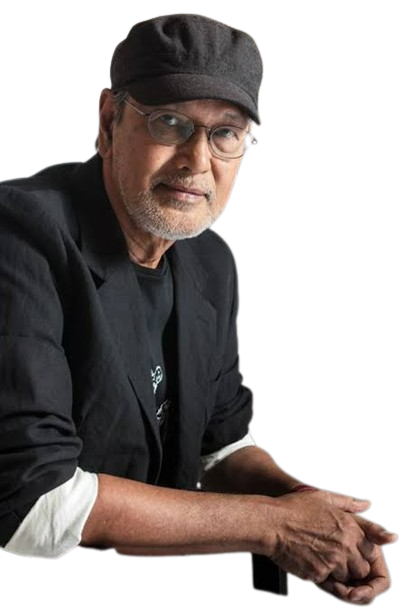

Benedicto Cabrera
Benedicto Reyes Cabrera, is regarded as the bestselling painter of his generation of Filipino artists. He was introduced to art by his elder brother Salvador, who was also an established painter. While studying at the University of Philippines, he explored various forms of art which included printmaking and photography. He eventually established his own unique form of painting. Cabrera’s work is essentially figurative and he uses fabrics and patterns to bring to life the figures in his paintings. His work is majorly focused on women, but sometimes also depicts men. In the year 1963, he won the first prize in a student competition for one of his oil painting which is known as the talipapa or a market. His first exhibition of paintings was held in Mabini in the year 1965. After that, he has had exhibitions in New York, London, Paris and in various other cities. Cabrera was awarded the Order of National Artists of the Philippines in Visual Arts (Painting) in the year 2006. He is perhaps the most famous living artist in the Philippines.